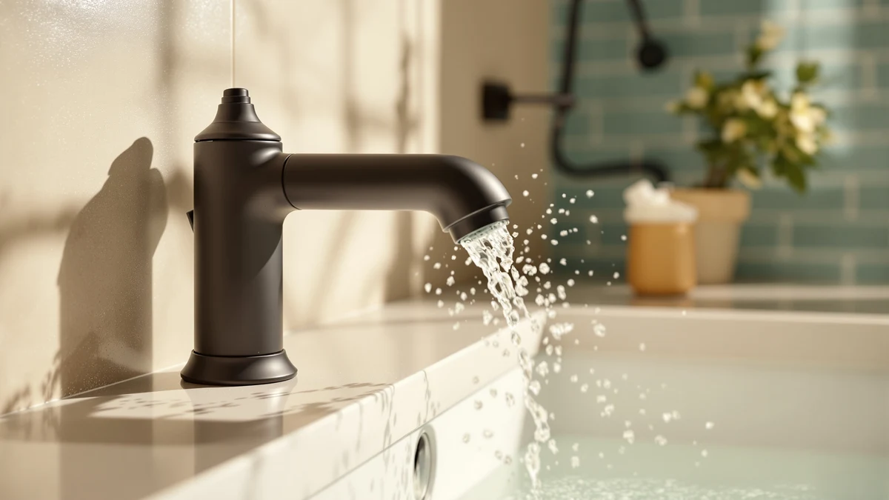

Best Shower Faucets With Handheld of 2026: 7 Top Picks
Prices and picks verified as of September 2026. Independent, reader-supported reviews.


Quick Answer
The IUERASD Brushed Gold Bathroom Faucet is our pick among the best shower faucets with handheld sprayers for 2026. Its pull-out wand, 360-degree swivel spout, and included pop-up drain give you shower-style rinsing at the sink for $55.99, and the brushed gold finish reads warmer than the nickel options in this group.
Our pick: IUERASD Brushed Gold Bathroom Faucet at $55.99 Check Price on Amazon
Bottom line: our top pick is the IUERASD Brushed Gold Bathroom Faucet 3 Hole with Pull Out at $55.99. The best budget option is the 3pcs Hot and Cold Water Faucet Indicator Compatible with at $5.49.
Things to Know Before You Buy
- These mount at the sink. The best shower faucets with handheld sprayers in this guide pair a standard spout with a pull-out or pull-down wand for hair rinsing, basin cleanup, and pet baths. Full tub-and-shower valve systems require in-wall plumbing and sit outside this comparison.
- Count your holes first. The IUERASD and BRAVEBAR need 8-inch widespread spacing across three holes; the FRANSITON, FELIXBATH, Ultimate Unicorn, and NOHALIPY fit 4-inch centerset decks. Measure center to center before you order.
- Finish drives the match. The field covers brushed gold, oil-rubbed bronze, brushed nickel, matte black, and stainless steel, so you can coordinate with the towel bars and shower trim you already own.
- Check what ships in the box. The IUERASD, FRANSITON, FELIXBATH, and Ultimate Unicorn include a pop-up drain; the NOHALIPY does not, which adds a small line item to a new install.
- Prices span $5.49 to $55.99. The cheapest entry is a repair accessory rather than a faucet, and the full sprayer faucets cluster between $44.99 and $55.99.
The best shower faucets with handheld sprayers put water where you point it: on your scalp over the basin, on a squirming dog, or on the shampoo residue clinging to the far corner of the sink. Each pick in this guide mounts at the sink and pairs a standard spout with a pull-out or pull-down wand, so you get shower-style rinsing without opening a wall to replace a tub valve. We compared seven options and chose the IUERASD Brushed Gold Bathroom Faucet as the best fit for most bathrooms at $55.99.
The field splits into two camps. The IUERASD and BRAVEBAR span 8-inch widespread, three-hole decks and combine a swiveling spout with a detachable sprayer, while the FELIXBATH, Ultimate Unicorn, and NOHALIPY compress the same wand function into 4-inch centerset bodies for smaller vanities. The FRANSITON drops the wand to hit $23.38, and the Sinbana indicator button set is a $5.49 repair part for the fixtures you already own.
Prices run from $5.49 to $55.99, and finishes cover brushed gold, oil-rubbed bronze, brushed nickel, matte black, and stainless steel, so you can match the hardware already on your towel bars and door pulls. Before you order, count the holes in your sink deck and measure the spacing, because that one number decides whether the widespread or centerset picks fit your bathroom.
Why You Should Trust Us
I am Ilane Tall, and I run Best Bathroom Faucets, where I catalog and compare faucet listings across dozens of categories, touchless models and matte black vanity sets included. For this guide on shower faucets with handheld sprayers, I cross-checked each product's listing claims, hole spacing, included hardware, and current price before writing a word. No brand paid for placement, and the affiliate links here never change which products make the list. You will find a flaws section under each pick, because a faucet without drawbacks does not exist at any price.
How We Picked
We started with the full pool of handheld sprayer faucets in our product database and applied four filters. First, the sprayer had to earn its place: we favored pull-out and pull-down wands over gimmick attachments, since the wand is the reason you shop for a shower faucet with handheld function in the first place. Second, the faucet had to fit standard American sink decks, which means 4-inch centerset or 8-inch widespread spacing on three-hole layouts. Third, we capped the price at $60, because sprayer faucets above that line add sculpture rather than function. Fourth, we favored complete kits, so most picks ship with a pop-up drain instead of forcing a second order. The FRANSITON is the one exception to the sprayer rule, kept for buyers who want the matching finish and install kit without paying for a wand they will not use.
How We Compared
We do not run a lab, so we will tell you what we did instead. We pulled the spec sheet for each shower faucet with handheld sprayer and verified hole spacing, handle count, finish, and included parts against the manufacturer listing. We compared sprayer mechanisms, weighing pull-out wands on hoses against fixed pull-down heads, and we flagged anywhere a listing claim looked thin. We then read recent buyer feedback on each product, watching for repeated reports of leaks at the hose junction, flaking finish, or missing hardware, and we cut candidates that showed a pattern of failures inside the first year. Prices in this guide reflect Amazon listings as of July 9, 2026.
Our Picks

IUERASD Brushed Gold Bathroom Faucet
What we like
- Pull-out sprayer detaches for hair rinsing and basin cleanup
- Spout swivels a full 360 degrees to clear the sink
- Matching pop-up drain ships in the box
- Two handles on an 8-inch widespread stance for fine temperature control
Flaws but not dealbreakers
- Highest price in this guide at $55.99
- Brushed gold shows water spots faster than nickel
- Requires a three-hole widespread deck, so smaller sinks are out
| Material | Brass + finish |
| Size | — |
The IUERASD earns the top spot by combining the sprayer function this guide exists for with the most complete hardware package in the group. The wand pulls out from the spout and puts a shower-style stream in your hand, which turns the sink into a hair washing station or a rinse bay for anything that will not fit under a fixed tap. The spout itself swivels 360 degrees, so you can push it against the backsplash when you need the whole basin clear, then swing it back to center for everyday use.
Brushed gold is the reason to pick this one over the cheaper nickel options, and against white porcelain it reads as warm brass rather than novelty. Two trade-offs come with it. At $55.99 this is the most expensive pick in the guide, and gold-toned finishes ask for a wipe-down after hard water dries on them, more often than the nickel and stainless picks below. You will need an 8-inch widespread, three-hole deck to mount it. If your sink offers that spacing, this is the strongest all-around package among the best shower faucets with handheld sprayers we compared.

Bathroom Sink Faucet FRANSITON 4
What we like
- Lowest-priced full faucet in this guide at $23.38
- Lead-free construction
- Pop-up drain stopper and supply hoses ship in the box
- 4-inch centerset spacing fits most small vanities
Flaws but not dealbreakers
- No pull-out sprayer, the one pick here without a wand
- Oil-rubbed bronze limits mix-and-match options with nickel hardware
| Material | Brass + finish |
| Size | 4 Inch |
The FRANSITON is the exception in this lineup: it skips the handheld wand and makes the list on price and completeness instead. For $23.38 you get a lead-free, two-handle faucet in oil-rubbed bronze plus the pop-up drain stopper and supply hoses, parts that most budget faucets make you buy separately. If you are outfitting a guest bathroom where nobody will wash a dog in the sink, that trade feels different than it does in your main bath, and the savings against the $55.99 IUERASD cover a nice dinner.
Treat it as the pairing pick. Put a shower-style sprayer faucet like the FELIXBATH in the bathroom that does the daily work, and use the FRANSITON where a fixed spout covers the job. The 4-inch centerset spacing fits the compact vanities common in older American homes, and the dark bronze hides water spots better than the gold and nickel finishes elsewhere in this guide. Buyers who need a handheld wand at this sink should skip ahead to the FELIXBATH or the NOHALIPY, both of which carry one for roughly double the price.

3pcs Hot and Cold Water
What we like
- $5.49 fixes unmarked handles and the scalding guesswork that comes with them
- Works on shower and bathtub handles as well as sinks
- Three buttons in the pack, so one spare survives the install
Flaws but not dealbreakers
- A repair part, not a faucet
- Sized for Price Pfister-style handles at 0.94 inches, so measure before ordering
| Material | Brass + finish |
| Size | — |
This one is an accessory, and we list it because the problem it solves shows up in the same houses that need this guide. On older shower and sink faucets the red and blue index buttons fade or fall out, and guests end up guessing which direction the scalding water lives. This three-pack of clear indicator buttons snaps into Price Pfister-compatible handles on sinks, showers, and bathtubs, and at $5.49 it costs less than the shipping on most replacement handles.
Measure before you order. The buttons run 0.94 inches (2.4 cm) across and seat in handles designed for that diameter, so a ruler laid across your old button saves you a return. If your existing shower faucet with handheld sprayer still runs fine but its handles have gone blank, this is the cheapest fix on this page. Buyers replacing a whole fixture should put the $5.49 toward one of the full faucets in this guide instead, since new faucets ship with fresh handles and markings of their own.

FELIXBATH Bathroom Sink Faucet with
What we like
- Pull-out sprayer packed into a 4-inch centerset body
- Lead-free construction
- Pop-up drain included
- Brushed nickel matches most existing bathroom hardware
Flaws but not dealbreakers
- At $52.99 it sits $3 below our top pick, so the savings are thin
- Still needs three holes, which rules out single-hole sinks
| Material | Brass + finish |
| Size | — |
The FELIXBATH answers the most common sizing problem in this category. Most sprayer faucets stretch across 8-inch widespread decks, while plenty of American vanities offer only 4-inch centerset spacing, and this one packs the pull-out wand into that smaller footprint. A cramped hall bath gets the same hair-rinsing, basin-scrubbing function as a master vanity. The lead-free rating matters too, since a bathroom faucet fills water glasses as often as it rinses them.
Brushed nickel is the safe finish choice here, and it hides water spots better than the IUERASD's gold. The catch is the price. At $52.99 the FELIXBATH lands $3 below our top pick, so choose it for fit, the 4-inch spacing and the included pop-up drain, rather than for savings. Among compact contenders for the best shower faucet with handheld function at the sink, this is the one we would order for a small three-hole vanity.

BRAVEBAR Brushed Nickel Bathroom Faucet
What we like
- Pull-out sprayer paired with a 360-degree swivel spout
- Rotatable body swings clear of the basin for cleaning
- Two-handle mixing on an 8-inch widespread stance
- $49.90 undercuts the IUERASD by $6 with the same layout
Flaws but not dealbreakers
- Brushed nickel is the only finish in this listing
- No pop-up drain mentioned in the box, unlike our top pick
| Material | Brass + finish |
| Size | — |
The BRAVEBAR is the IUERASD's nickel-finished sibling: 8-inch widespread stance, two handles, a 360-degree swivel spout, and a pull-out sprayer, for $49.90 instead of $55.99. If brushed gold does not fit your bathroom, this is the same functional recipe in the finish that matches most towel bars and shower trim sold over the last decade. The rotatable body earns its keep at cleanup time, since you can swing the spout against the backsplash and reach the whole basin with the wand.
We slotted it below the IUERASD because the gold faucet ships with its drain hardware while this listing leaves the drain to you. For a nickel bathroom, though, the BRAVEBAR is the shower-style handheld sprayer faucet we would mount, and the $6 saved covers part of that missing drain. Like the other widespread picks it will not fit a 4-inch centerset or single-hole sink, so measure for 8-inch spacing across three holes before ordering.

Ultimate Unicorn Pull Down Bathroom
What we like
- Anti-splash pull-down sprayer tames strong streams in shallow sinks
- Matte black hides fingerprints and water spots
- Pop-up drain included
- Sized for RV restrooms as well as home vanities
Flaws but not dealbreakers
- Pull-down head offers less reach than a pull-out wand on a hose
- Matte black coatings are hard to touch up if chipped
| Material | Brass + finish |
| Size | 4 Inch |
The Ultimate Unicorn takes the pull-down approach: the sprayer head bends toward the basin rather than detaching on a long hose, and the anti-splash design keeps a strong stream from ricocheting out of a shallow powder-room or RV sink. At $44.99 in matte black it is the style pick of this group, and the 4-inch centerset, three-hole layout fits both small home vanities and the pre-drilled decks common in RV restrooms. The pop-up drain ships in the box, which keeps the total cost where the sticker says.
Understand the trade before you buy. A pull-down head rinses the basin and handles quick hair rinses at the counter edge, but it cannot roam the way the IUERASD or NOHALIPY wands do, so dog washing is off the menu. If your priority among shower faucets with handheld-style sprayers is looks and splash control in a tight space, the Unicorn covers it, and matte black pairs with the dark hardware trend without demanding daily wipe-downs the way polished finishes do.

NOHALIPY Stainless Steel Brushed Nickel
What we like
- Pull-out sprayer with a dual-function spout, stream or spray
- Stainless steel body under the brushed nickel finish
- Rated for utility sinks, pet showers, and RVs as well as vanities
- Mid-pack price at $45.99
Flaws but not dealbreakers
- Utility styling looks plain next to the IUERASD or the Unicorn
- No pop-up drain in the listing, so budget for one on a new install
| Material | Brass + finish |
| Size | — |
The NOHALIPY is the workhorse of this guide. The manufacturer pitches it for utility sinks, pet showers, and RVs alongside standard bathroom vanities, and the hardware backs that framing: a stainless steel body, a pull-out sprayer, and a dual-function spout that switches between a steady stream and a spray pattern. If the reason you searched for a shower faucet with handheld capability is a dog, start here, because a wand you can aim beats a fixed spout the moment the animal decides bath time is over.
Stainless steel resists the corrosion that eats cheaper zinc bodies in damp utility rooms, and the brushed nickel finish keeps it presentable in a guest bath. At $45.99 it sits mid-pack on price, between the Unicorn and the BRAVEBAR. The listing does not include a pop-up drain, so add one to your cart on a new install rather than a swap, and confirm the 4-inch, three-hole spacing when you measure your deck.
Quick Comparison
| Product | Material | Price | Rating | Best for | Get it |
|---|---|---|---|---|---|
| IUERASD Brushed Gold Bathroom Faucet | Brass + finish | $55.99 | 4 | Widespread decks wanting gold with a handheld wand | View on Amazon → |
| Bathroom Sink Faucet FRANSITON 4 | Brass + finish | $23.38 | 4 | Budget 4-inch installs without a sprayer | View on Amazon → |
| 3pcs Hot and Cold Water | Brass + finish | $5.49 | 4 | Restoring hot/cold buttons on existing fixtures | View on Amazon → |
| FELIXBATH Bathroom Sink Faucet with | Brass + finish | $52.99 | 4 | Small centerset sinks needing a pull-out sprayer | View on Amazon → |
| BRAVEBAR Brushed Nickel Bathroom Faucet | Brass + finish | $49.90 | 4 | Nickel widespread decks with daily sprayer use | View on Amazon → |
| Ultimate Unicorn Pull Down Bathroom | Brass + finish | $44.99 | 4 | Matte black bathrooms and RV restrooms | View on Amazon → |
| NOHALIPY Stainless Steel Brushed Nickel | Brass + finish | $45.99 | 4 | Pet washing, utility sinks, and RVs | View on Amazon → |
Can a sink faucet with a handheld sprayer replace a shower?
For hair washing, pet baths, and rinsing, yes.
What sink spacing do the best shower faucets with handheld sprayers need?
Measure center to center between the outer holes.
The Competition
We cut two whole categories before settling on these seven. Wall-mounted handheld shower kits and tub-and-shower valve sets deliver true overhead showering, but swapping one means cutting into the wall and sweating pipe, which puts them outside the quick-upgrade scope of this guide on shower faucets with handheld sprayers. If that is your project, hire the plumber first and choose the trim second. We cut sub-$20 sprayer faucets with plastic bodies and push-fit hose connections as well, because the hose junction is the first failure point on a sprayer faucet and plastic threads strip on the second re-tightening.
At the top end, designer sprayer faucets above $150 add sculpted spouts and matching accessories without out-rinsing what the BRAVEBAR does for $49.90, so we left them to buyers shopping on looks alone. Single-hole sprayer faucets form a separate category with their own trade-offs, and we cover them in our single-hole roundups rather than forcing them into this three-hole field.
Frequently Asked Questions
Can a sink faucet with a handheld sprayer replace a shower?
What sink spacing do the best shower faucets with handheld sprayers need?
How much should I spend on a handheld sprayer faucet?
Bottom line: the IUERASD Brushed Gold Bathroom Faucet leads the best shower faucets with handheld sprayers for 2026, with the BRAVEBAR as the brushed nickel alternative and the NOHALIPY as the pick for pets and utility work.